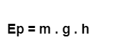
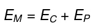
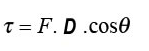

Trabalho e energia
Não existe uma definição do que é energia, mas sabemos que a sua existência possibilita a execução de trabalho. A energia armazenada nos alimentos, por exemplo, faz com que os órgãos do corpo de uma pessoa funcionem corretamente. Os combustíveis fazem com que os veículos automotores se locomovam. Da mesma forma, a energia elétrica produzida pela bateria faz com que os elétrons dos fios condutores de energia se locomovam.
-
Energia cinética
É a energia que está ligada à movimentação de algum corpo. Qualquer tipo de corpo em movimento é dotado desse tipo de energia: translação, rotação, vibração e outros. A energia cinética pode ser calculada pela fórmula seguinte:

Energia Potencial
É a energia que algum corpo possui em virtude da posição que ocupa. Na ausência de atrito, a energia mecânica total de um sistema se conserva, ocorrendo apenas uma transformação de energia potencial em energia cinética, como também ocorre o contrário.
Energia mecânica
a capacidade de um corpo produzir trabalho. Também podemos interpretá-la como a energia que pode ser transferida por meio de uma força.
Trabalho
Para algum objeto se mover é necessária uma força e concomitantemente, transformação de energia. Quando há uma aplicação de força e deslocamento do ponto inicial da aplicação dessa força, afirmamos que houve trabalho.
Quando falamos do cálculo de trabalho, temos que saber que o trabalho pode ser:
Trabalho de uma força constante paralela ao deslocamento: Calcula-se quando a força está sendo aplicada no mesmo sentido do movimento. Pode ser calculado da seguinte forma:
Trabalho de uma força constante não paralela ao deslocamento: Nesse caso, o trabalho é calculado quando se tem a força sendo aplicada no mesmo sentido do deslocamento.
